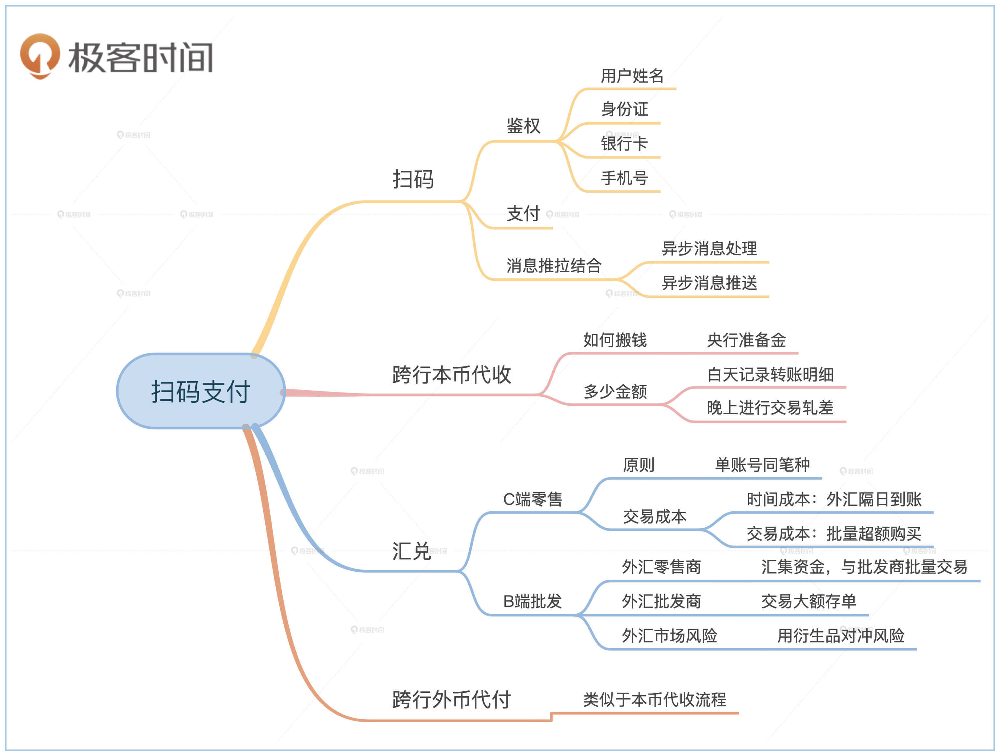

- 00 开篇词 如何成为金融级人才？.md.html
- 01 业务初探：扫了二维码之后发生了什么？.md.html
- 02 原理解读：如何理解第三方支付的业务逻辑和系统组件？.md.html
- 03 产品大观：不同金融业务都有哪些技术实现要点？.md.html
- 04 领域驱动设计（上）：如何设计金融软件顶层架构？.md.html
- 05 领域驱动设计（下）：如何设计统一的金融业务模型？.md.html
- 06 计算输入的正确性：怎么选择正确时间的数据？.md.html
- 07 计算过程的正确性：如何设计正确的数据处理架构？.md.html
- 08 计算结果的正确性：怎么保证计算结果是正确的？.md.html
- 09 数据传输的质量：金融业务对数据传输有什么要求？.md.html
- 10 数据存储的合理性：金融业务可以不用关系型数据库吗？.md.html
- 11 系统优化：如何让金融系统运行得更快？.md.html
- 12 正确性分级（上）：单机无备份有哪几种不同的一致性？.md.html
- 13 正确性分级（中）：多机无容灾有哪几种不同的一致性实现？.md.html
- 14 正确性分级（下）：多机有容灾有哪几种不同的一致性？.md.html
- 15 分布式正确性的存在性（上）：什么情况下不存在分布式共识算法？.md.html
- 16 分布式一致性（下）：怎么理解最简单的分布式一致性算法？.md.html
- 17 正确性案例（上）：如何实现分布式的事件溯源架构？.md.html
- 18 正确性案例（中）：常见分布式数据方案的设计原理是什么？.md.html
- 19 正确性案例（下）：如何在运行时进行数据系统的动态分库？.md.html
- 20 容灾（上）如何实现正确的跨机房实时容灾？.md.html
- 21 容灾（下）：如何通过混沌工程提高系统稳定性？.md.html
- 春节策划第1期 分布式金融系统知识，你掌握了多少？.md.html
- 春节策划第2期 读书如抽丝，为你推荐一些我读过的好书.md.html
- 春节策划第3期 如何运用架构知识解读春运买票和手游案例？.md.html
- 答疑集锦（一） 思考题解析与外汇架构知识拓展.md.html
- 答疑集锦（三） 思考题解析与数据库底层实现.md.html
- 答疑集锦（二） 思考题解析与账务系统优化.md.html
- 结束语 金融之道，与你同行，虽远尤欣.md.html
- 捐赠
01 业务初探：扫了二维码之后发生了什么？
你好，我是任杰。今天我们进入第一个模块：金融业务及系统。
通过这个模块，我会带你了解常见的金融业务有哪些，盈利模式又是怎样的。了解了业务端的规律，我们就可以沿着这个线索推导出相应的系统核心需求以及具体组件，推测出相对应的系统设计要点。有了这些铺垫，后面我们动手去设计金融架构的时候，你的思路就会更加清晰。
金融业务有很多种，按业务模式划分，包括交易类业务和信贷类业务两种。今天是课程的第一讲，我想带你了解一个标志性的交易类业务，也就是扫码支付。
虽然扫码支付非常普遍，但是它并不简单。把这个内容安排在第一讲，我有这样三点考量：
第一，是扫码支付最具有代表性，扫码支付是现在最常见的金融场景。
第二，传统银行业务的标志性机构大多都参与到了扫码支付的过程当中，你可以通过扫码支付来了解国家金融系统的运作原理。
第三，是扫码业务同时具有互联网应用和机构应用的技术特点。扫码支付既要对接互联网用户，也要对接金融机构。你可以了解不同的架构设计思想和他们之间沟通的方式。
总之，一旦你理解了扫码支付，也就在金融技术这个领域入了门。现在就让我们从第三方支付出发，一起来探索扫了二维码之后发生了什么吧。
情景假设
扫码支付其实也分很多场景。但我们是不可能把所有的场景都讲一遍，我们在这里需要做更进一步的选择。一方面要典型，另一方面又要能给你多介绍一些参与机构。综合考虑后，我选择了与跨境电商相关的扫码跨境支付场景，具体的假设有这些：
1.付款方用户支付的是人民币。- 2.付款方的借记卡是国内银行A发行的，简称买家开户行。- 3.第三方支付公司的备付金账户在国内银行B，简称第三方开户行。- 4.收款方接受的是美元。- 5.收款方的借记卡是国外银行C发行的，简称卖家开户行。- 6.第三方公司是通过银行D进行外币兑换业务，简称汇兑提供行。
由于国内对人民币相关的外汇交易有管制，本外币交易需要满足一定要求，比如要求电商平台有对应的交易明细。为了方便你理解，我们假设已经在其他部分完成了相应的合规流程。
那么接下来，我会分4个部分给你讲解整个支付过程：用户扫码支付、第三方公司进行本币代收、外汇交易以及外币代付。
用户扫码
扫二维码支付显然是以用户扫码作为整个业务的起点。从终端用户的角度来看，扫码由鉴权、支付和拉取状态三个步骤组成。接下来，我们就来详细看看这几个步骤。
鉴权
扫码支付最终会用买家的银行卡进行支付。在你开始扫码支付之前，第三方公司需要核实你是否有这张卡的使用权，俗称“绑卡”。
那第三方公司是怎么验证用户的使用权呢？在国内，我们一般采用下面这4个要素来进行验证：
- 用户姓名
- 用户身份证号码
- 银行卡号码
- 银行注册的手机号
这4个要素都是银行记录的信息，因此虽然看起来你是在第三方支付公司的App上进行绑卡操作，其实是银行在背后进行相关信息的验证工作。
由于这4个要素都是电子信息，可能会被人盗用，所以为了进一步增强安全性，银行在验证手机号码的时候还需要验证你是否拥有这个手机号码。具体的方式是发一条验证码给在你在银行柜台办借记卡时注册的手机号码。
结合前面的内容，我们可以把鉴权的过程分为4步：第1步，用户填写前3个要素和手机号码；第2步，银行发短信验证码给用户手机号；第3步，用户将前3个要素和短信验证码发给第三方支付公司；第4步，第三方支付公司再将所有信息发送给银行进行确认。
所以鉴权的过程其实是验证了5个信息，其中4个是静态信息，1个是动态信息。
在用户绑卡通过之后，银行会返回给第三方支付公司这个用户的内部ID信息（也叫Token）。之后第三方支付公司就可以拿这个ID进行所有合法的操作。
刚才给你讲解的流程示意图如下：
支付
鉴权完成之后，就可以扫二维码，进行支付了。二维码其实是一个图形化的字符串，背后是这笔交易对应的订单。当用户点击“确认”之后，就会开始整个支付流程。
拉取支付状态
那为什么需要拉取支付状态呢？我们还是从台前转到幕后，从系统功能的角度思考。
用户App的支付确认按钮是有局限的，它只能确认后台是否已经收到了支付请求，并不能确认支付是否已经成功。这是因为支付后台需要花一些时间和银行沟通，在这个期间后台并不知道银行的支付流程进行到了哪一步。
由于不知道支付什么时候才能完成，用户App需要每隔一段时间就向支付后台拉取交易情况，我们通常会把这个过程叫作轮询。这个过程一般在几百毫秒内就能结束，所以你一般察觉不到延时。
那为什么会出现轮询这种系统对接方式呢？金融机构每天会面对大量的用户资金操作，这些操作的时间和频率有很大的偶然性。
为了应对用户操作的峰值情况，金融机构普遍通过异步消息处理的架构来对极端流量进行削峰填谷。如果流量突然增大，异步消息架构会缓存所有请求，慢慢处理。这样就能避免核心金融系统超载。异步消息架构的结果就是用户不会及时得到处理结果，需要自己不断地去查询处理情况。
当银行处理完支付后，银行会把支付成功的消息推送给用户和第三方支付公司。第三方支付公司也会推送给你支付成功的消息。所以你在扫码支付成功后，通常还能听到两个手机消息通知的声音。
到这里我们看到了两种不同的获取最新状态的方式。一种是用户定期去拉取状态，另一种是服务器将状态消息实时推送给用户。这种推拉结合的消息通知方式，其实是架构设计中常见的异步系统处理方式。支付状态获取的流程图如下：
本币代收
前面我们假设了这笔支付涉及到外汇交易，由于买家的和卖家使用的币种不同，就无法直接转账。这时候就需要第三方支付公司这个中间人来帮忙了。中间人角色要做3件事情：
1.本币代收- 2.外汇交易- 3.外币代付
我先给你说说本币代收，也就是第三方支付公司代收用户资金。通俗一点来说，本币代收就是将你该付的钱先打到第三方支付公司账上。
由于第三方支付公司的账号和买家的银行卡在两家不同的银行，本币代收需要进行跨行转账。跨行转账会涉及到整个银行系统的大小额系统和超级网银等，非常复杂。所以这里我们对场景进行一些简化，但是会和现实有一些出入，主要是方便你理解。
央行和清算机构
跨行转账的时候，钱是在不同的银行。因此我们想要实现跨行转账，就需要解决两个问题。第一个问题是怎么将钱在两家银行之间转来转去，另一个问题是转的金额是多少。
我们先看第一个问题，那就是怎么跨行搬钱。最直接的方法是用汽车将钱从一家银行的金库搬到另一家银行。但这个方法其实不太实用，汽车能运的钱重量有限，路上也不太安全。所以钱最好不要挪动地方。
这时候又需要另一个第三方机构出马了。所有银行都在这个新的第三方机构里放足够多的钱，一般叫做存款准备金。当两家银行之间需要转账的时候，第三方机构在内部搬运一下就好。比如美国的黄金交易所就是这种工作模式，每个客户都有自己专属的黄金仓库，很多小车在仓库之间搬运黄金。
如果这个第三方机构足够可信，那么连内部搬运都不需要。这个第三方机构只需要记录一下谁的钱有多少，以及从哪里搬了多少到另一个地方就行。信用级别最高的金融机构就是国家的中央银行，简称央行。所以央行解决了真实资金的转移问题。
我们再来看另一个问题，那就是怎么知道转移的金额有多少。会有这个问题的原因是每天银行之间的跨行交易非常多，不可能每一笔都通过央行转一次钱。所以银行系统对跨行转账的流程进行了优化。那就是在白天只做记录，不进行任何实质性的跨行转账。等每天结束的时候计算一下两个银行之间交易金额的差额是多少，最后通过央行进行一笔跨行转账就可以了。这种计算交易差额的方式叫做轧差。
这个记录白天跨行转账细节和晚上进行交易轧差的第三方机构叫作清算机构。你熟悉的银联及网联，以及国外的万事达，它们都是清算机构。
前面我们在介绍拉取支付状态的时候，讲过金融系统采用异步消息处理架构应对支付流量。轧差是另一种金融机构应对大流量的一种处理方式。轧差的本质是实时消息的批量处理，从某种程度来讲是延时更大的异步处理框架。
跨行转账流程
讲完央行和清算机构之后，我们就可以对跨行转账过程做一个详细的梳理了。整个过程分为七步：
第一步，第三方支付公司发送指令给第三方开户行，要求将钱从用户的买家开户行转到第三方开户行。
第二步，第三方支付公司拥有用户在买家开户行的Token，所以可以合法发起这笔转账。跨行转账流程开始。
接着到了第三步，第三方开户行将所有信息交给清算机构。清算机构作为第三方负责记录这些信息，并通知买家开户行和第三方开户行记录这笔转账。
第四步，买家开户行记录的结果是对用户的账号进行扣款。扣款结束后用短信的方式通知用户。
然后是第五步，第三方开户行记录的结果是对第三方支付公司的账号进行打款。打款结束后第三方支付公司可以通过银行网页看到对公账户金额发生变化。白天的工作到此结束。此时买家开户行的账面上的资金虽然减少，但是减少的钱并没有实质性到达第三方开户行。
第六步，到了晚上，清算机构对白天发生的交易进行盘存，发现有一笔从买家开户行到第三方开户行的跨行转账还没有真正完成。清算机构会将这笔未完成的跨行转账信息发送给央行。
还有最后一步，央行收到信息之后，将买家开户行在央行的存款准备金调低，并将第三方开户行在央行的存款准备金调高。这样钱就真正地从买家开户行转到了第三方开户行。
这七步的示意图如下：-
外汇交易
转账交易的第二步是第三方支付公司进行外汇交易。当第三方支付公司完成了用户的本币代扣之后，第三方支付公司账上就有了对应的人民币。接下来的一步是将这些人民币变成美元，这样才能将美元转给国外的卖家。
那么外汇交易的过程又是怎样的呢？按照交易量的大小，可以分为C端外汇零售业务和B端外汇批发业务两个部分。
C端外汇零售业务
外汇交易和电商一样，也是一个买卖的过程。第三方支付公司作为中间人，需要用人民币购买美元。那美元从哪里购买呢？人民币有外汇管制，不能随意买卖，需要通过一些有特殊资质的银行才行。如果外汇不涉及到人民币，那么选择面会宽泛很多，银行、投行或者其他金融机构都可以。
账务原理建议一个账号只处理同一个币种的交易。外汇交易涉及到两个币种的货币，因此需要两个不同的账号。
在这节课的最开始，我假设了第三方支付公司是通过汇兑提供行进行外汇交易的。那么第三方公司需要在汇兑提供行里建两个账号，一个人民币账号和一个美元账号。同时，汇兑提供行内部也需要有对应两个币种的账号，一个对应着人民币资金池，另一个则是美元资金池。
所以，一笔外币的购买涉及到4个账号之间的2笔支付订单。交易过程的示意图如下：
外汇交易完成之后，第三方支付公司在汇兑提供行的人民币账户金额减少，美元账户金额增加。这样第三方支付公司就有了足够的美元来支付给卖家。
我们需要注意的是，外汇交易是有成本的。第一个成本是时间成本。当天购买的外汇可能隔天才到账。另一个成本是交易成本。外汇交易一般会按照交易次数收费。因此为了节省成本，第三方支付公司通常会提前购买大量的外汇，用来应对日间的业务。只有当外汇储备下降到警戒线之后再做下一笔大额外汇的购买。
讲到这里，我们解决了第三方支付公司美元账户不足的问题，但是它用来购汇的人民币账户一直在往外出钱，总会有枯竭的一天，又该怎么办呢。
所以我们还需要考虑从外部调资金进来。由于第三方支付公司的备付金账户在第三方开户行，因此需要做从第三方开户行到汇兑提供行的跨行转账，示意图如下：
但是第三方公司在第三方开户行的账户也在一直出钱，我们往上推演一步，就会发现第三方开户行账户也需要有进来资金的渠道。这个是由前面我们提到的本币代收的过程实现的。我们把买家出资的流程补充完整。整个过程的示意图如下：
这样梳理下来，你是不是觉得我们已经考虑得足够全面了呢？
其实这里还有一个问题需要我们考虑：汇兑提供行帮助第三方支付公司实现了外汇购买。但是汇兑提供行的美元账户一直在出钱。那这个美元账户钱不够了怎么办？这时候汇兑提供行需要从其他银行寻求帮助。这个过程就涉及到了B端外汇批发交易。
B端外汇批发业务
前面提到的电商相关的外汇交易属于外汇的零售业务。银行、投行和其他外汇提供商之间形成了一个有层级的跨国组织，专门从事外汇的批发业务。批发业务的业务量非常巨大，通常每天都有几万亿美元的规模。
外汇市场是按照交易量大小来划分层次的。最底层的是面对终端用户的外汇零售商。这些零售商负责给一般用户提供小额的外汇交易。这些小笔的外汇交易汇集在一起之后，就会形成一笔大的外汇订单，然后继续往上层交易。
和底层的外汇零售商一样，上一层的机构将所有外汇交易汇集在一起之后，形成更大的外汇订单，再往更上一层交易。
一直往上汇集这种事情不会永无止境地进行下去。这个流程的尽头是全球最大的外汇做市商，一般是巨型的跨国商业银行。
这些跨国商业银行面对的是全球不同国家大量的储蓄用户，所以它们手上就拥有不同币种的巨额存款。这些做市商之间通过交换不同币种的大额固定利息存折来实现外汇交易，从而决定最终汇率。示意图如下：
之前我给你提到过外汇交易有时间成本，当天购买的外汇需要隔天才能到账。在这一天的时间间隔之内，外汇市场可能会有巨大的波动，从而造成金融机构账面上的资金亏损。所以，参与外汇业务的金融机构都会处理外汇相关的市场风险，比如用期货、期权等衍生品来对冲风险。这些金融衍生品，我们会在后面的章节详细展开，这里你先有个印象就行。
为了方便你理解，我们把到目前为止的流程画一个简单的示意图：
外币代付
外币代付流程和本币代收流程在原则上是一样的。不同点在于外币代付的金额是美元，流出账号是第三方支付公司的美元账号。由于卖家的账号在卖家开户行，第三方支付的美元账号在汇兑提供行，这时候需要走的是国际的清结算过程。
流程的核心思想和之前的类似，只是具体的细节会更加复杂。下图展示了简化版的支付流程。
小结
用户在扫码支付前需要证明自己合法拥有银行卡，需要给开卡行提供4要素：姓名、身份证、银行卡号和手机号。验证通过后便可以开始支付流程。支付完成后用户可以通过轮询的方式异步获取支付状态。异步处理是金融机构应对支付流量的一种架构设计。
在第三方支付公司收到支付请求后，开始进行本币代收业务。由于账号设立的关系，需要进行跨行转账。此时清算中心和央行一起提供了跨行转账功能。跨行转账一般采用了日间交易、日终轧差结算的方式进行。轧差处理是金融机构应对支付流量的另一种架构设计。
第三方支付公司在完成本币代收业务之后，还要进行汇兑业务，具体分为外汇零售业务和批发业务。如果涉及外币代付业务，第三方支付公司还需要借助国际清结算组织的相关功能。
你需要注意的是，二维码支付涉及的大多数环节都是异步系统，比如用户App的异步支付状态查询，以及清算中心和央行及银行之间的跨行转账清结算过程。异步系统不会将结果同步返回给调用方。因此，我们在设计系统的时候，就需要支持状态的查询以及状态消息的推送功能。
本节课的知识点整体的结构图如下：- 
思考题
第三方支付公司在做外汇交易的时候，不会只碰到单一方向的汇兑业务。既然有人民币到美元的转换，那么也会碰到美元到人民币的转换。汇兑提供商的收费只和交易数量有关，和交易币种无关。如果你是负责第三方支付公司的资金管理，你有什么方法能进一步降低汇兑成本吗？
欢迎留言和我分享你的想法。如果学了这节课让你有所收获，也欢迎把这篇文章分享给你的朋友，一起交流和讨论支付系统的问题。
© 2019 - 2023 Liangliang Lee. Powered by gin and hexo-theme-book.